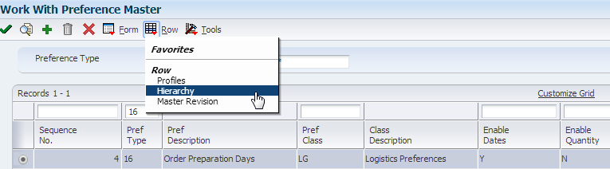
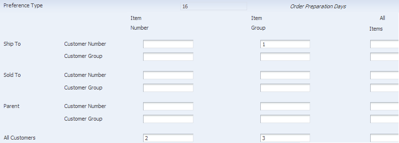
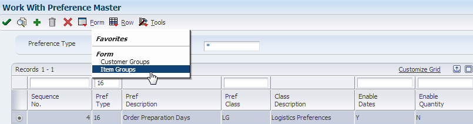
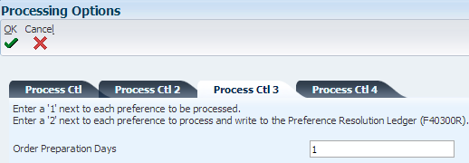
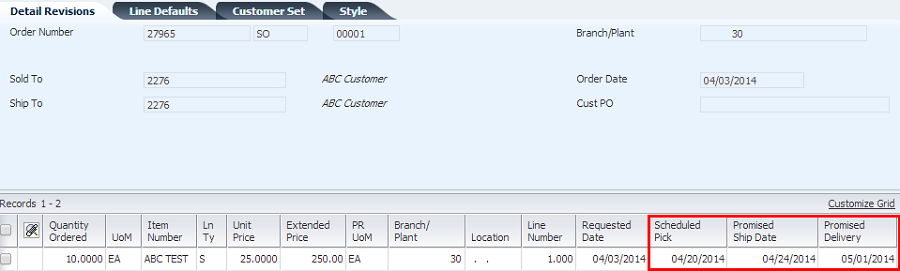
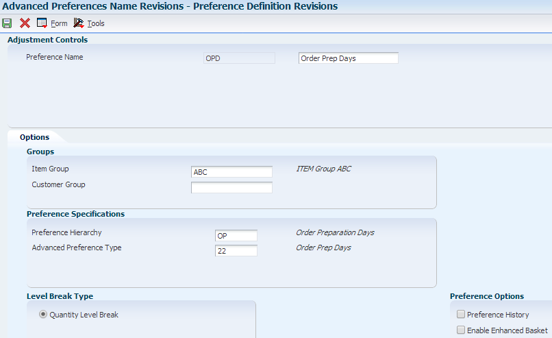
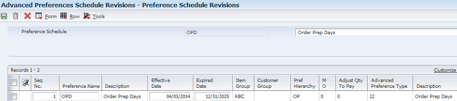

To set up the preference, in Preference Master (P40070) take the Row Exit to Profiles, then add the new preference.
| Purpose |
| Scope |
| Details |
| Basic Preference Setup (Menu G4231) |
| Preference Definition |
| Sales Order Entry (P4210) Processing Options |
| Basic Preference Examples: Sales Order Entry (P4210/P42101), Menu G4211 |
| Example with Order Preparation Days and Delivery Date preferences |
| Example When Updating Dates on Existing Sales Order |
| Advanced Preference Setup (Menu G40311) |
| Advanced Preference Definition (P4071) |
| Advanced Preference Detail (P4072) |
| Advanced Preference Schedule (P4070) |
| Sales Order Entry (P4210) Processing Options |
| Advanced Preference Example: Sales Order Entry (P4210/P42101), Menu G4211 |
| Additional Information |
Overview
The Order Preparation Days preference enables the automatic calculation of the days between the Scheduled Pick Date and Promised Ship Date (PPDJ), on the sales order detail line.
This preference is also applied at time of Inventory Commitments (R42997).
The system uses the number of days specified in preference information to determine the time it will take to pick the order line, then get it ready to be shipped. Often times, the Delivery Date Preference (09) is used in conjunction with the Order Preparation Days preference (16) to determine the Promised Ship Date (PPDJ) in order to meet the Promised Delivery Date (RSDT).
The scope of the document is to outline the steps required to set up and apply Order Preparation Days Basic Preference (Preference Type 16) and Advanced Preference (Preference Type 22) at Sales Order Entry, when updating dates, or copying a sales order.
From Preference Master (P40070), inquire on Order Preparation Days and take Row Exit to Hierarchy (P40073).

Note: In this example, Enable Quantity was not activated.
Verify that the hierarchy is set up as desired.

Note: In this example, the preference will be defined based on Item Group, so it’s required that at least one of the Item Group categories are selected in the hierarchy.
To set up the Item Group, in Preference Master (P40070), take the Form Exit to Item Groups

Set up item number to with a specific Item Group in the Order Preparation Days option.
To set up the preference, in Preference Master (P40070) take the Row Exit to Profiles, then add the new preference.

Enter the preference set up information. In this example, the Order Preparation Days has been defined for the Item Group and 4 calendar days for order prep time.
Note: if using this preference with a specific customer, the value specified in the Priority Code (alias PRIO) field in the preference record must be the same as the Priority assigned to the customer – this is set in the Customer Billing Information, “Billing Page 2” and uses the same alias, PRIO – but is labeled as “Priority Processing Code”. If the two values differ, the preference will not be resolved.

Preference Tab – activate preference processing

Versions tab – version of Preference Profile (R40400) is the default, which is ZJDE0001

Preference Profile Processing (R40400) – activate Order Preparation Days on Process Control 3 tab

In the example below, both the Order Preparation Days and Delivery Date preferences will be applied. The Delivery Date preference is set up for a specific item/customer combination, with 7 in transit days.

Preference Profile Processing (R40400) – activate Delivery Date on Process Control 2 tab

Enter a sales order for the item set up in the Item Group ‘Fuel’ and the customer set up with the Delivery Date preference. Enter a Promised Delivery Date (RSDJ) in the future, and notice that there are 4 days between the Scheduled Pick Date (PDDJ) and Promised Ship Date (PPDJ), representing the Order Preparation Days. The Delivery Date preference also applied, which is represented by 7 days between the Promised Ship Date (PPDJ) and Promised Delivery Date (RSDJ).

In sales order SO 27965 from example above, change the Promised Delivery Date (RSDJ) and notice that the Scheduled Pick Date (PDDJ) and Promised Ship Date (PPDJ) are recalculated.


Note: In this example, the advanced preference is defined based on Item Group ‘ABC’. See ‘Setting Up Item Groups’ section below for this set up.
Preference Hierarchy (P40073) definition

Setting up Item Groups
From menu G4231112, select Item Price Groups (P4092) to add item group. In this example, a complex Item Group is set up to use Sales Catalog Section (SRP1).

Note: This preference works with both complex and simple Item Groups.
Item Master (P4101), Category Codes – set up Sales Catalog Section (SRP1) using ‘ACC’

In this example, the preference detail is set up based on Item Group.

Take Row Exit to Pref Details and define the Sequence, Business Unit and Order Prep Days. In this example, Order Prep Days will be 5.

Preference Tab – activate preference processing and in this example, define the Advanced Preference Schedule.

Note: The Advanced Preference Schedule may alternately be defined in the System Constants (P41001), rather than P4210 processing options.
Add a new sales order for an item included in Item Group ‘ABC’. Notice that there are 5 days between the Scheduled Pick Date (PDDJ) and Promised Ship Date (PPDJ)